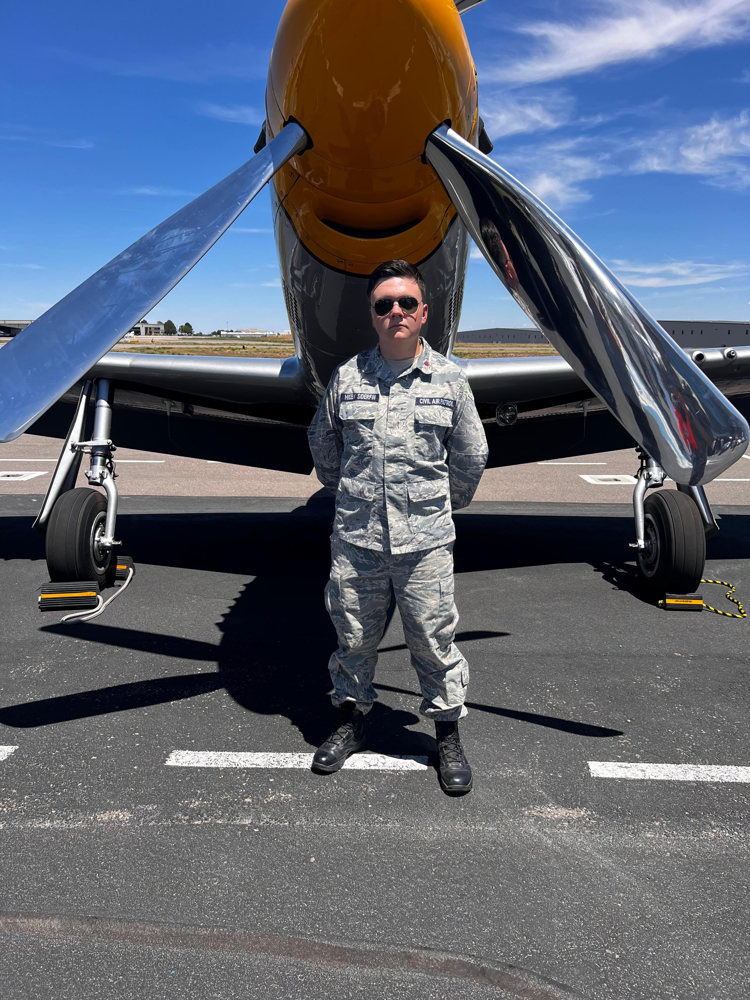
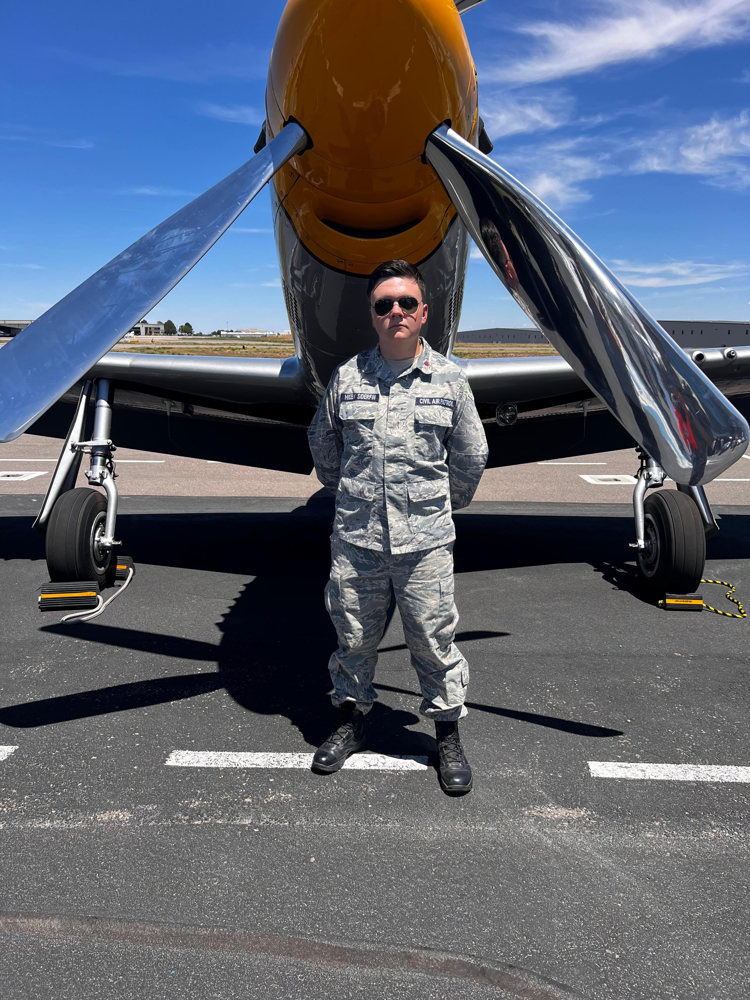
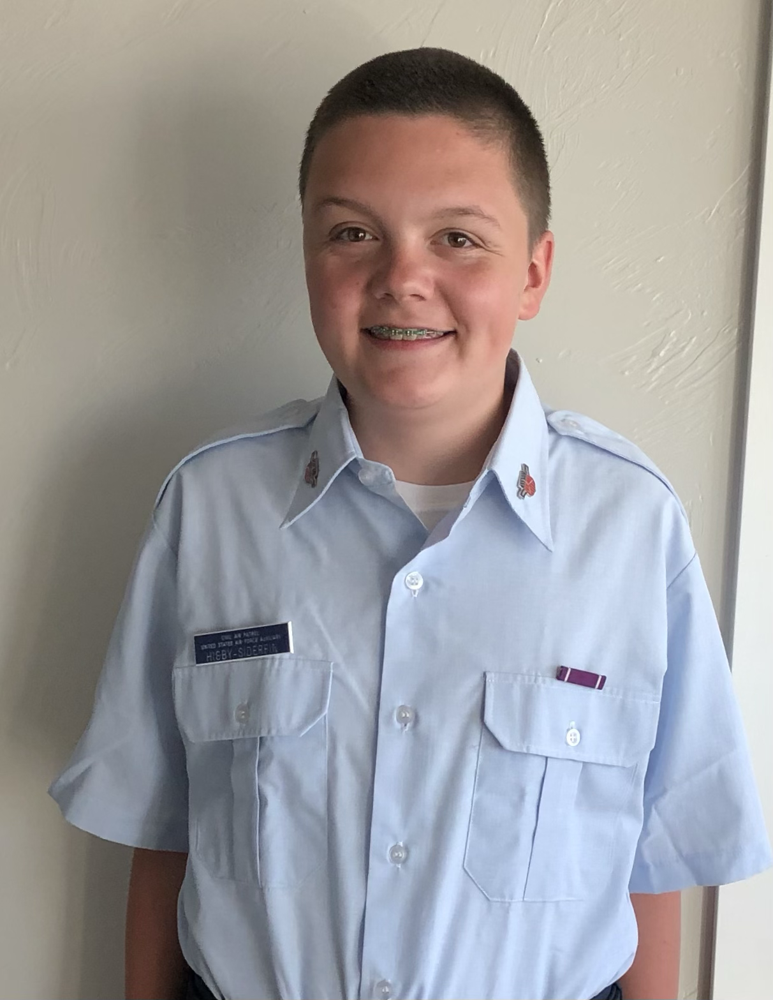
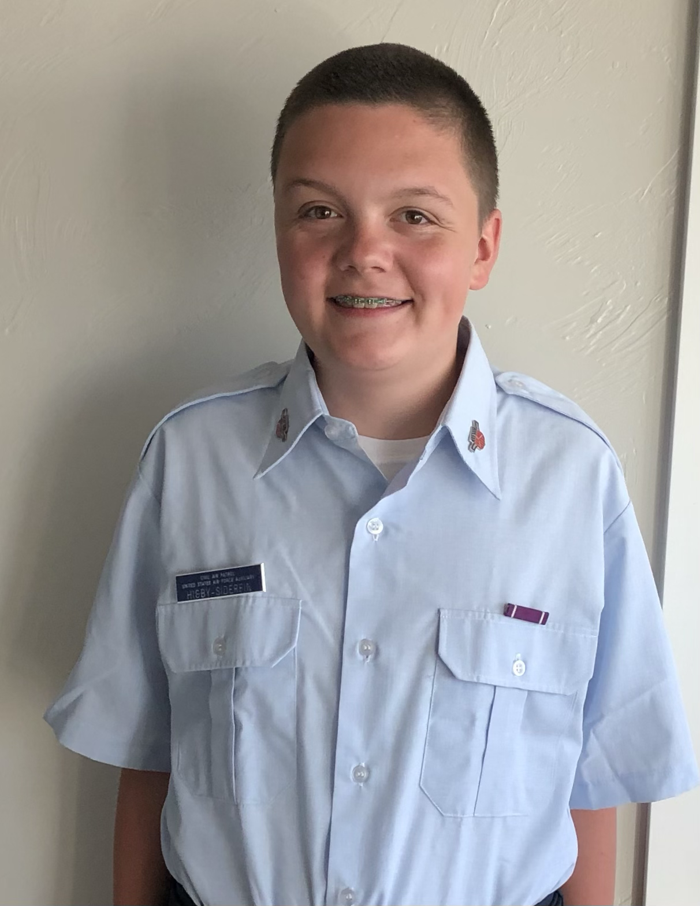

I have been in the Civil air patrol cadet program for 4 years in June. In Civil Air Patrol I have been promoted to the rank of Technical sergeant and I am working on my µaster sergeant promotion now. In the program I have recived many awards including the reconsation of life saving award, NCO of the year, and CAC cadet of the month. I started my Civil Air Patrol journey at Thompson Valley composite squadron in Fortcollins CO and in 2021 I moved to Highlander composite squadron in Highlands ranch. In Civil Air Patrol I have held the positions of CAC secondary, CAC primary, O-ride coordinator, Aerospace NCO, and Safety officer. I am hoping to in the next year promote to officer and hold Great start flight sergeant. To learn more about cap look at the videos below.
 

 
